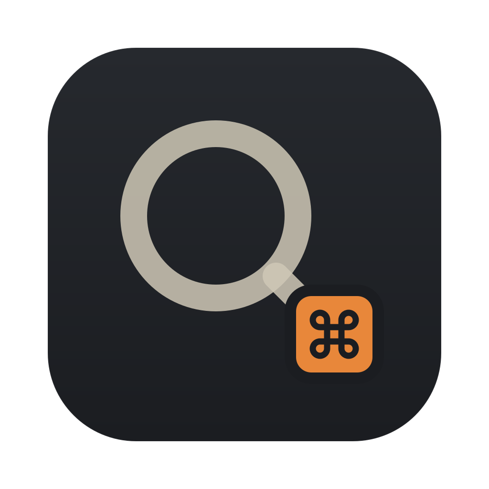
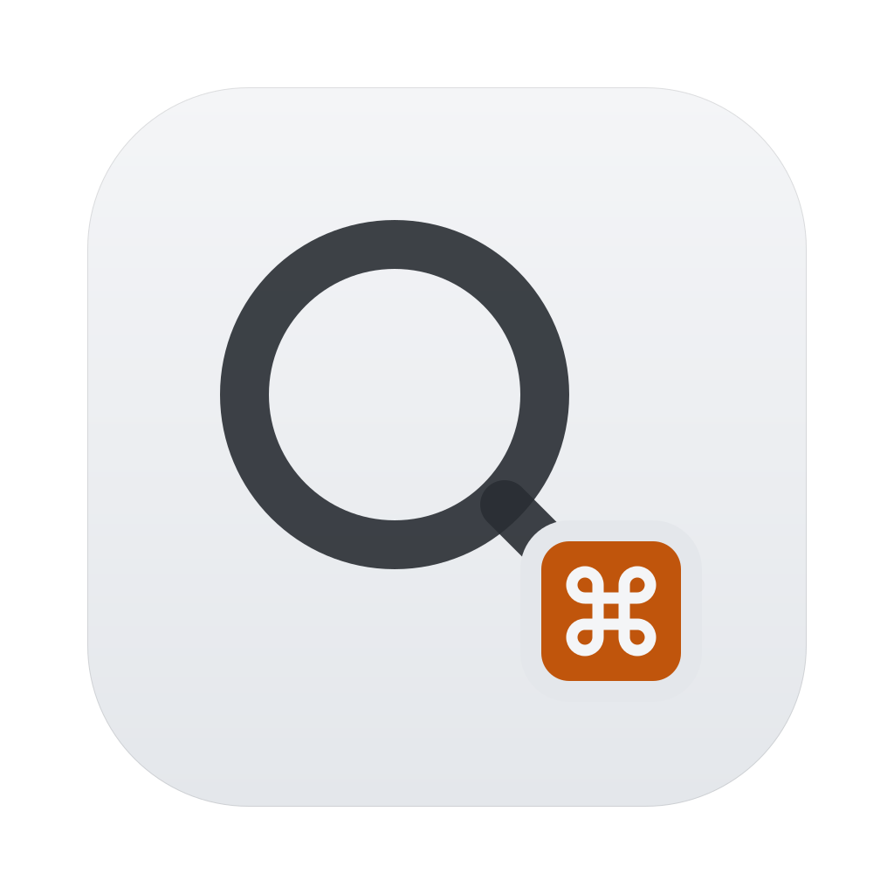

libghostty surfaces
Every pane is a real GPU-rendered terminal hosted in AppKit — full keyboard routing, sided modifiers, a clipboard confirmation policy for paste. No Electron, no web view, no reimplemented VT parser.
Native macOS · Swift 6 + libghostty · MIT
A tiling terminal multiplexer for the room full of coding agents you're already running.
Codex, Claude Code, and OpenCode side by side in real GPU-rendered terminals. Every pane says what its agent is doing, and macOS tells you which one is waiting on you.
The problem
They run asynchronously, they all stop to ask you something eventually, and terminal tabs hide the one that is blocked. So you cycle through tabs looking for the agent that went quiet for the wrong reason.
Soprano is built around the question you actually have all day: which agent needs me right now? Panes answer it themselves — the launchers install lifecycle hooks per launch, so nothing scrapes output and nothing touches your global agent config.
The launcher is up, the agent has not reported in yet.
A turn is in flight. Leave it alone.
Idle and waiting for a prompt.
A question or a permission prompt. This is the one you came for.
The turn failed. The pane keeps the state until you look.
The process exited. The layout stays where you left it.
Attention
Notifications only fire for panes that are not focused, and they are subtitled window › pane so the banner names the location. Clicking one activates Soprano and focuses that exact tab. A pane's banners group together instead of stacking up.
⏺ Migration 0042 removes users.legacy_role.
It is still read by AdminExport.swift:88.
Drop the legacy column? [y/n]• Ran swift build
└ Build complete! (14.2s)Click a banner and Soprano focuses that exact tab. Live agent states across every logical window. Navigate with J/K, open with Return.
The layout
Panes live in a recursive split tree, so a window is never a fixed grid you have to fight. Then there is depth: any pane can open a private workspace on the window's z-axis, so one pane becomes a whole layout while its siblings keep running behind it.
› Add SplitNode.insert(_:beside:axis:) and route ⌃A | through it. • Explored └ Read SplitNode.swift, PaneContainerView.swift, Keymap.swift • Edited Sources/Soprano/Layout/SplitNode.swift (+31 -4) + func insert(_ pane: PaneID, beside target: PaneID, + axis: SplitAxis) -> SplitNode { + guard let leaf = find(target) else { return self } + return replacing(leaf, with: .split(axis, [leaf, .leaf(pane)])) + } • Edited Sources/Soprano/Input/Keymap.swift (+6 -2) - case "|": splitActive(.vertical) + case "|": tree.insert(new, beside: active, axis: .vertical) • Ran swift build └ Compiling Soprano SplitNode.swift Compiling Soprano PaneContainerView.swift Build complete! (14.2s) 3 files changed, 48 insertions(+), 12 deletions(-) › wire the same path into ⌃A -
⏺ Read Migrations/0042_drop_legacy_role.sql ⏺ Search(legacy_role) — 2 matches AdminExport.swift:88 UserRecord.swift:14 ⏺ Migration 0042 removes users.legacy_role. It is still read by AdminExport.swift:88, so the export breaks after the migration. Drop the legacy column? [y/n] y = drop and patch AdminExport · n = keep
◇ resolving imports ◇ writing tests Tests/PaneTreeTests.swift ✓ testSplitKeepsFocus ✓ testInsertBesideLeaf ✓ testCollapseOnClose · testDepthRoundTrip ◇ running swift test --filter PaneTree
~/soprano main $ swift test Executed 252 tests, with 0 failures in 38.4 seconds $ git status --short M Layout/SplitNode.swift M Input/Keymap.swift $
One pane becomes a layout — and every layout comes back on the next launch.
What it does
Every pane is a real GPU-rendered terminal hosted in AppKit — full keyboard routing, sided modifiers, a clipboard confirmation policy for paste. No Electron, no web view, no reimplemented VT parser.
Codex, Claude Code, and OpenCode start with lifecycle hooks scoped to that launch. Your global agent configuration is never modified.
Define your own launcher under agents — command, args, env, cwd or a launchScript, colour, and its own launch key. It shows up in the sidebar and settings like a built-in.
A WebKit pane with an address bar and history controls. Agents drive it from any terminal: "$SOPRANO_BIN" browser click @e1, with snapshots that assign element refs.
Vim motions over the scrollback — viewport and buffer jumps, character and line selection, clipboard yank.
Every action in one place, plus a project launcher and search over your configured project directories on ⇧⌘P.
Searches window titles and nested pane details at once, prioritising window-title matches.
The last workspace restores on launch. Save named sessions and toggle back to the previous one with ⌃A⇧L.
Files, folders, URLs, and macOS screenshot thumbnails dropped on a terminal become shell-safe paths at the cursor.
Every pane with its git branch, a spawn menu, a sessions footer, and jump hints that appear while ⌃ is held.
Pane navigation passes through to tmux at layout boundaries, scoped to the issuing process, pane, and tab — so nesting behaves.
One commented file at ~/.config/soprano/settings.json. Rebind any action by id, or set it to null to turn it off. Saving applies immediately — no restart.
Every binding is rebindable by action id in settings.json.
The family
The same keys, the same status vocabulary and the same single orange part that says where you are.
Terminal multiplexer for coding agents.
Keyboard-first Git client.


Launcher and hotkeys.
Window switcher.
Themes
These are the real palettes from Theme.swift, applied live to this page. Themes recolour open terminals — background, ANSI palette, pane headers — without a restart. Quiet is the default and follows the system appearance.
› swift build + func insert(_ pane: PaneID)
› swift build + func insert(_ pane: PaneID)
› swift build + func insert(_ pane: PaneID)
› swift build + func insert(_ pane: PaneID)
› swift build + func insert(_ pane: PaneID)
› swift build + func insert(_ pane: PaneID)
› swift build + func insert(_ pane: PaneID)
› swift build + func insert(_ pane: PaneID)
Your choice is remembered while you browse. It does not change how Soprano is configured.
Install
Soprano links libghostty statically, so the first build compiles it once. After that you only repeat it when the ghostty submodule moves.
# 1 · Toolchain. Homebrew Swift is required — the system CLT Swift has broken SPM. $ brew install swift zig $ xcodebuild -downloadComponent MetalToolchain # 2 · Clone with the ghostty submodule $ git clone --recurse-submodules https://github.com/frknue/soprano.git $ cd soprano # 3 · Build libghostty once (a few minutes) $ ./scripts/build-ghostty.sh # 4 · Build the release app into /Applications $ ./install.sh $
Requirements: macOS 14 Sonoma or newer · full Xcode with the Metal Toolchain (Command Line Tools alone cannot build libghostty) · Homebrew Swift 6.2+ · Zig 0.15.2+.